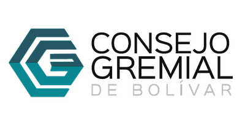
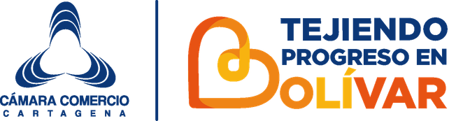

← → avanzar · L lanzar pregunta · P ventana · R respuesta · N notas · F pantalla completa · K llave
Junta de Juntas 2026
De la técnica a la incidencia
Del qué al cómo: un sistema de inteligencia territorial que convierte cada prioridad de la región en una propuesta con texto, vía y evidencia.
Alonso Ramírez HernándezJefe del Departamento de Investigaciones Económicas · Cámara de Comercio de Cartagena
Departamento de Investigaciones Económicas


Antes de empezar
Hay un tema que en el Caribe sentimos todos los meses, cuando llega el recibo.
¿Qué puede hacer el Plan Nacional de Desarrollo para bajar la tarifa de energía del Caribe, y qué no puede hacer?
Se la estamos preguntando al sistema ahora. Al final vemos qué encontró.
De la técnica a la incidencia2
Del qué al cómo
La región sabe lo que quiere
Y mucho de esto ya se está trabajando: los gremios, la bancada, los gobiernos locales y la academia.
Canal del Diquetarifa de energíaastilleroscorredor de cargatren regionalformalizaciónprotección costeraagua en los corregimientosdoble calzadacrédito para la pequeña empresagobernanza regionaltalento bilingüesolares represadoscompetencias turísticasbrechas sociales
De la técnica a la incidencia3
Del qué al cómo
Para que algo pase, tienen que pasar muchas cosas técnicas
Una obra
Canal del Dique
1Vigencias futuras autorizadas
2La plata de cada año, apropiada y girada
3El trámite ambiental resuelto
4Un responsable que reporte el avance
Un problema
La tarifa de energía
1La metodología, que es de la CREG
2Subsidios con presupuesto
3Inversión en redes y pérdidas
4Medición pública de la transición
Una industria
Los astilleros
1Crédito con el barco como garantía
2Incentivos que cubran la reparación
3Un registro público del sector
4Compras públicas que los prioricen
Cada condición tiene un vehículo distinto. Unas van al Plan; otras, por otra vía.
De la técnica a la incidencia4
Cómo se hace el Plan
Cómo se hace el Plan, y por dónde se entra
7 ago 2026Se posesiona el nuevo gobierno
15 nov 2026A más tardar: las bases llegan al Consejo Nacional de Planeación
10 ene 2027Hasta esta fecha, el Consejo rinde su concepto
7 feb 2027Antes de esta fecha, el proyecto de ley llega al Congreso
feb–may 2027Tres meses de trámite; si no se aprueba, el Gobierno lo expide por decreto
Las Bases
El diagnóstico y las estrategias: dónde la región queda nombrada.
El articulado
Lo que obliga: ordena, fija plazos, cambia reglas.
El plan de inversiones
Los proyectos y la plata, año por año.
Otra vía
La CREG, un decreto, una ley propia, un CONPES o una gestión. No es descarte: a veces es la ruta más rápida.
De la técnica a la incidencia5
Cómo lo pensamos
Lo social y lo productivo son un solo ciclo
Lo que el territorio pone
Conectividad que mueve la producción y acerca a la gente
Energía confiable para la casa y la industria
Agua para los hogares, el campo y la economía
Territorio que se anticipa al clima
Lo que mueve a las empresas
Reglas claras e incentivos para abrir, operar y formalizarse
Capital que llega y produce: crédito e inversión
Formación pertinente para el trabajo
Lo que sostiene a la gente
Cierre de brechas socioeconómicas que activa el potencial productivo
Instituciones regionales y descentralización, con respaldo de la Nación
Nueve palancas: condiciones que, al moverse, hacen girar el ciclo.
De la técnica a la incidencia6
Ustedes, en las palancas
Lo que la sala le dijo a Bolívar hoy
En vivo · voces de la zona de experiencia, agrupadas por palanca
Conectividad—
Energía—
Agua—
Clima—
Reglas e incentivos—
Capital—
Formación—
Brechas—
Descentralización—
Lo que más se dijo
Las palabras aparecen a medida que llegan las voces.
— voces · — organizaciones
«Mi compromiso y mi voz por Bolívar» · escanee el código de la zona de experiencia y cuéntenos qué le quiere decir a Bolívar.
De la técnica a la incidencia7
Sistema de inteligencia territorial
Reúne lo que la región ya produce y lo ordena para incidir
Entra
Voces y datos
gremios y mesas
solicitudes
censo y registro
Nivel 1
Cuatro miradas por sector
NormaDatoReferentesVoz
Nivel 2
Expedientes que se cruzan
contradicciones que se aclaran
lo que falta medir, marcado
validación técnica independiente y del equipo
Nivel 3
La puerta
Bases
articulado
plan de inversiones
otra vía
Sale
Propuesta lista
con texto, vía, precedente e indicador
PensarDialogarIncidir
Documentos, datos, normas y voces, en un solo lugarLa máquina recorre; el equipo técnico valida y despliegaSuma lo que cada uno hace; no reemplaza a nadie
De la técnica a la incidencia8
Cómo llegamos acá
Empezamos escuchando
42 fuentes documentales, con los 3 últimos planes nacionales→ 35 entradas→ 20 apuestas→ 9 palancas
Barú 2030Fundación Santo DomingoUniversidad Colegio Mayor de BolívarGremios de la mesa técnica de turismoy sigue creciendo
~30organizaciones en la mesa técnica de turismo del 15 de julio
12conversaciones de validación registradas
+20expedientes sobre los temas de la región
994documentos que el sistema puede citar
De la técnica a la incidencia9
Un caso: energía
Un problema estructural, muchos esfuerzos, varias vías
Lo que ya existe, y el sistema reúne
El Plan Caribe Energético de la RAP Caribe, del que la Cámara es aliada
La mesa técnica «Caribe con Energía» con la CREG, que convocó la representante Juliana Aray
Las resoluciones de la CREG y la sentencia C-364 de 2025
Los datos de la Superservicios
Las voces de gremios y operadores
Y lo ordena por vía
Plan · articulado
Subsidios de los estratos 1, 2 y 3 con presupuesto plurianual y giro a tiempo
Plan · articulado
Que la UPME publique cada semestre las solicitudes de conexión que ya recibe
Plan · articulado
Una meta cuatrienal de normalización eléctrica, con fondos que no se desvíen
Regulación
El rediseño del régimen y el reconocimiento de las pérdidas son de la CREG
Ley y decreto
Sacar de la factura los cobros que no son energía, por ley; el plazo del régimen lo fijó un decreto
Lo que encontró el sistema: el plazo de cinco años del régimen se cuenta desde la firmeza de los cargos. Para Air-e esa fecha fue el 30 de junio de 2021 (Decreto 1645 de 2019 y constancia de la CREG).
De la técnica a la incidencia10
Lo que ya propone
Los proyectos estratégicos: qué le piden al Plan
Canal del Dique
Proteger las vigencias futuras ya autorizadas contra aplazamientos. No pide plata nueva.
Articulado y plan plurianual
Aeropuerto Rafael Núñez
En construcción por APP. Solo un hito de seguimiento de la terminal internacional.
Otra vía · seguimiento
Ciudadela Aeroportuaria de Bayunca
Que se pronuncien en los términos de ley y reporten el estado, respetando la consulta previa.
Articulado
Cantagallo–Yondó
Ordenar su rehabilitación: rediseño y licencia nueva.
Articulado o Bases
Vía al Mar Cartagena–Barranquilla
Definir de dónde sale la plata del tramo de doble calzada que falta.
Plan plurianual
Corredor de Carga Cartagena–Mamonal
Que los accesos portuarios pasen a la red nacional o se cofinancien, con la Ley 105.
Articulado y plan plurianual
Tren Regional del Caribe
Una entidad responsable en seis meses y la factibilidad financiada.
Articulado y plan plurianual
Portafolio energético del Caribe
Coordinación con plazos para licencias y conexión de 27 proyectos.
Bases y articulado
En la mayoría, el freno no es la plata: es una decisión, un trámite o un responsable.
De la técnica a la incidencia11
Ventanilla de Incidencia Asistidadel Sistema de Inteligencia Territorial · «Sigue tu vía, encuentra tu guía»
Una ventanilla para la incidencia, abierta a cada gremio
1
Trae su prioridad
Una necesidad, un proyecto o una idea de política.
2
El sistema la trabaja
Norma, dato, referentes y voces, en un expediente.
3
El equipo técnico la despliega
Valida lo que se afirma, con fuente, y marca lo que falta.
4
Sale como propuesta
Con texto, vía, precedente y evidencia. Y después, seguimiento.
Próximo paso: sentarnos con la UTL de cada congresista y entregar las propuestas técnicas, según el nivel de incidencia de cada una.
Esto apenas empieza. Construyámoslo juntos
De la técnica a la incidencia12
La pregunta del comienzo
Mientras hablábamos, el sistema trabajó
Lo que la región ya produjo, reunido y ordenado: en minutos, una propuesta con su vía.
Presione R para ver lo que encontró
De la técnica a la incidencia13
Junta de Juntas 2026
Empresas que construyen una región más grande
De la técnica a la incidencia · Departamento de Investigaciones Económicas · Cámara de Comercio de Cartagena
Gracias
Respaldo · energía
La energía en sí no es más cara: pesa lo que se le suma
Costo unitario por componente, estrato 4, tercer trimestre de 2025, en pesos por kilovatio hora
Cartagena y Bolívar (Afinia)Bogotá (Enel)
Generación
281
284
Comercialización
210
77
Pérdidas
102
58
Restricciones
60
31
Costo unitario total906801+105 pesos por kilovatio hora en Cartagena
Comercialización: 2,7 veces la de Bogotá. La generación cuesta casi lo mismo. Transmisión y distribución no se comparan aquí: el dato de Bogotá está por confirmar.
Fuente: Superservicios, Boletín Tarifario III-2025 (tablas 16, 33, 41, 44 y 47) y archivo mensual de tarifas por operador.